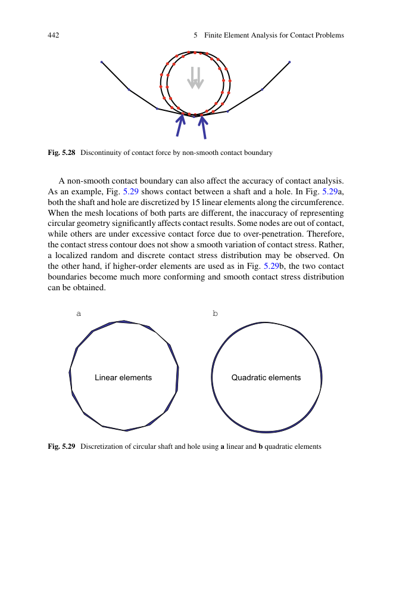
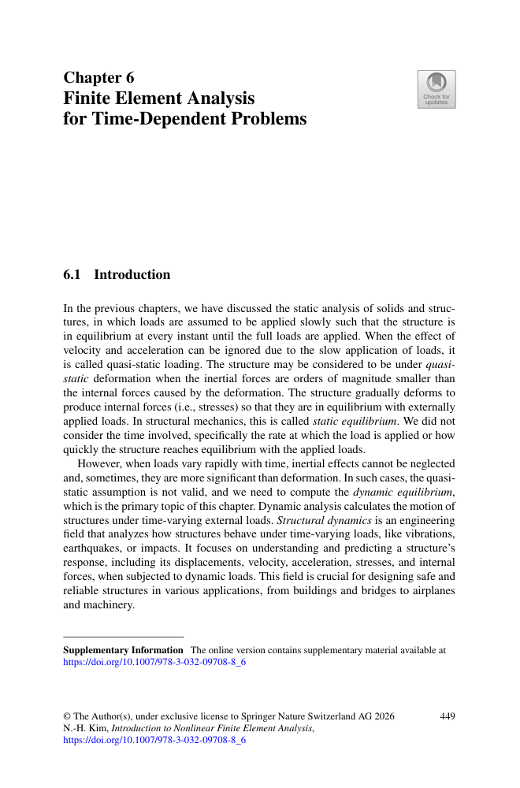
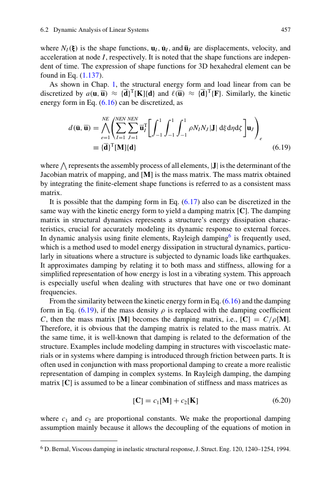
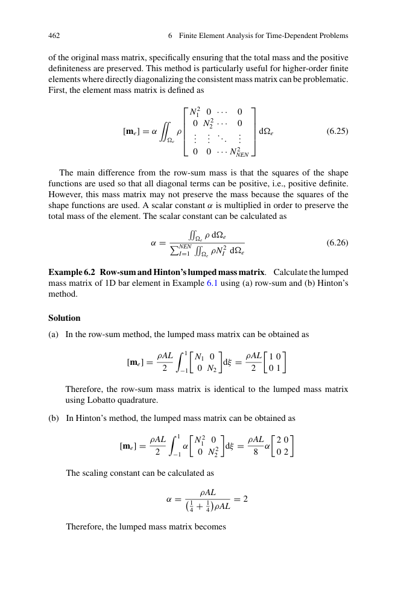
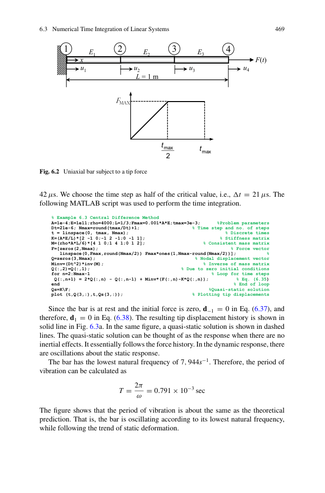

第 6 章 · 时变问题的有限元分析
Finite Element Analysis for Time-Dependent Problems · PDF p449–488
📖 6.1 本章概览
动力学非线性 = 时间相关问题（含惯性与阻尼）。核心：将 PDE 离散为常微分方程组，用时间积分算法逐步推进。惯性项仍是线性的，非线性来源仍是前几章的几何/材料/边界非线性。
- 6.1 引言：三种动力学问题（瞬态、稳态、波动）
- 6.2 线性系统的动力学分析（模态叠加）
- 6.3 数值时间积分（隐式 / 显式）
- 6.4 非线性动力学（NR + 时间积分）
- 6.5 显式 vs 隐式对比
- 6.6 商业软件中的时间步控制
适合方向：汽车碰撞仿真（LS-DYNA）、地震响应、疲劳、轮胎稳态滚动、鸟撞、手机跌落等高速动力学问题。

图 6.x 动力学问题分类：瞬态 / 稳态 / 波动
📐 6.2 动力学方程
6.2.1 运动方程
其中 M 质量矩阵（恒定），C 阻尼矩阵（Rayleigh），K 刚度矩阵（可随状态变化）。

图 6.x 一致质量矩阵 vs 集中质量矩阵的对比
6.2.2 质量矩阵
- 一致质量矩阵：∫ ρ NTN dV（更精确）
- 集中质量矩阵：对角化，显式积分更高效
- Row-sum / Hinton 方法：构造对角 mass matrix
6.2.3 Rayleigh 阻尼
αM、αK 由目标频率处阻尼比反算。优点：解耦模态；缺点：与频率脱节。
显式积分要求 d̈ = M-1 · (...) 。如果 M 是集中（对角）矩阵，逆矩阵就是简单的 1/diag，极大提速。一致矩阵需要解线性方程组。
⏱️ 6.3 时间积分方法

图 6.x 三大类时间积分方法对比
6.3.1 三大类
| 方法 | 类型 | 稳定性 | 特点 |
|---|---|---|---|
| 中心差分 (CDM) | 显式 | 条件稳定 | Δt ≤ Δtcr |
| Newmark-β | 隐式 | 无条件 (β≥1/4) | 需要 NR 迭代 |
| HHT-α | 隐式+阻尼 | 无条件 | 数值阻尼 |
6.3.2 中心差分法 (CDM)
显式：直接计算 dn+1。需要两个初始条件：d0 和 d-1（用 Taylor 展开从 d̈0 计算）。
6.3.3 Newmark-β 隐式法
β = 1/4, γ = 1/2 → 平均加速度法（无条件稳定）。
β = 0, γ = 1/2 → 中心差分（条件稳定）。
每步需要解 M+γΔt C+βΔt² K · dn+1 = ... + NR 迭代。

图 6.x Newmark-β 时间积分的几何解释
6.3.4 HHT-α 阻尼方法
对运动方程左乘 (1+α)，引入数值阻尼，抑制高频振荡（沙漏）。当 α → 0 时退化为 Newmark。
⚖️ 6.4 显式 vs 隐式

图 6.x 显式与隐式时间积分的稳定性区域
- 🚀 显式（CDM）：极快（无需刚度求逆/组装），但Δt 极小。适合高速冲击、短时、接触多问题（汽车碰撞仿真、鸟撞、手机跌落）
- 🐢 隐式（Newmark）：每步解线性方程组，但 Δt 可大。适合低频、长时间、几何非线性（结构地震响应、轮胎稳态滚动）
6.4.1 CFL 稳定条件
Lmin：最小单元长度；c：波速；ρ：密度；E：弹性模量。
钢 Δtcr ≈ 1e-6 s（10mm 单元），远小于仿真时长 → 显式积分需要百万个时间步。
🔁 6.5 非线性动力学迭代方案
6.5.1 组合策略
把时间积分 + NR 结合：
- 时间步 n：当前 t = nΔt
- 外循环（NR）：解平衡方程，找当前 dn+1
- 内循环：解局部残差 → 更新 KT
- 收敛判断：力残差 / 能量
6.5.2 显式动力学 = 简化
显式时间步无需 NR 迭代，但每个时间步都需要重算内力（几何/接触/材料），计算量也不小。
🏗️ 6.6 商业软件时间步控制
Abaqus / Standard（隐式）：
- 全自动时间步长 + 二分法（不收敛就减半）
- 最大/最小 Δt 限制
- 半步残差检查
Abaqus / Explicit（显式）：
- 稳定极限自动估算 Δtcr
- 质量缩放（mass scaling）拉长 Δt（牺牲精度）
- 可与材料 ERODE 失效准则联用
LS-DYNA（显式，汽车碰撞事实标准）：
- 显式中心差分
- 接触算法丰富（NTS、STS、单面）
- 材料库齐全（金属、橡胶、复合材料、土壤）
💡 6.7 工程例子
1D 杆单元 L：A 截面，ρ 密度。
- Row-sum：(ρAL/2) · diag(1, 1) = lumped mass
- Hinton：(ρAL/2) · α · diag(2/8, 6/8)，α = ρAL/(ρAL/4 + 3ρAL/4) = 2，确保总质量守恒
- 🚗 整车 100-150 ms，5-10 万单元
- 🚀 显式积分（LS-DYNA）单步 Δt ≈ 1e-6 s
- 💻 整车计算 100-1000 CPU 小时
- 🛡️ 为约束系统（气囊、安全带）调参 + 100+ 次 DOE
- 🐦 鸟体视为流体（SPH 或 ALE）+ 叶片为弹塑性（CEL 耦合）
- 🚀 显式积分处理大变形 + 材料失效（*MAT_EROSION）
- ⏱️ DC - 持续数毫秒，但 Δt 极小
- 🌍 持续 30-60 s 地震波
- 📊 隐式积分（Newmark β=1/4）Δt = 0.01 s
- 📈 计算材料塑性累积损伤
- 📋 用于抗震设计规范校核
📌 6.8 本章总结
- ✅ 动力学方程：Md̈ + Cḋ + Kd = F
- ✅ 质量矩阵（一致 / 集中）与 Rayleigh 阻尼
- ✅ 显式（CDM）vs 隐式（Newmark）时间积分
- ✅ CFL 稳定极限 Δtcr = Lmin/c
- ✅ HHT-α 数值阻尼
- ✅ 商业软件：Abaqus/Standard（隐式）、Abaqus/Explicit、LS-DYNA
- ✅ 工程应用：碰撞、跌落、地震响应、轮胎、鸟撞
📍 整车被动安全仿真几乎完全依赖本章的显式动力学（LS-DYNA + RADIOSS + Abaqus/Explicit）。
📝 6.9 习题（PDF p480-488）
- 6.1 质量矩阵推导
- 6.3 中心差分法手算（2 自由度系统）
- 6.8 Newmark-β 隐式积分
- 6.12 Rayleigh 阻尼参数选取
- 6.15 隐式 vs 显式选择
- 6.18 CFL 极限与单元尺寸关系
- 6.22 模态叠加 vs 直接积分（线/非线性）
- 6.25 用 MATLAB 写显式积分程序
{kind=link}
{kind=link}
{kind=link}
{kind=link}
{kind=link}